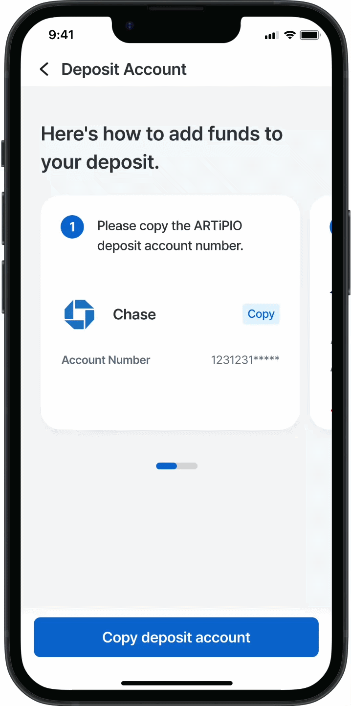
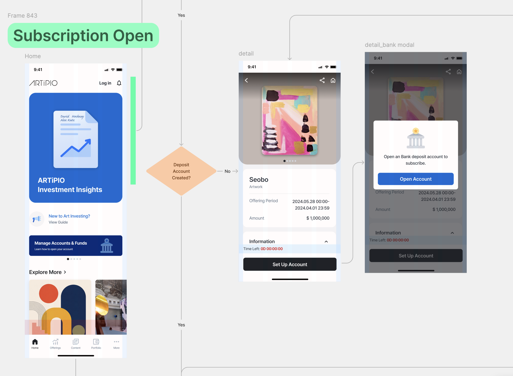
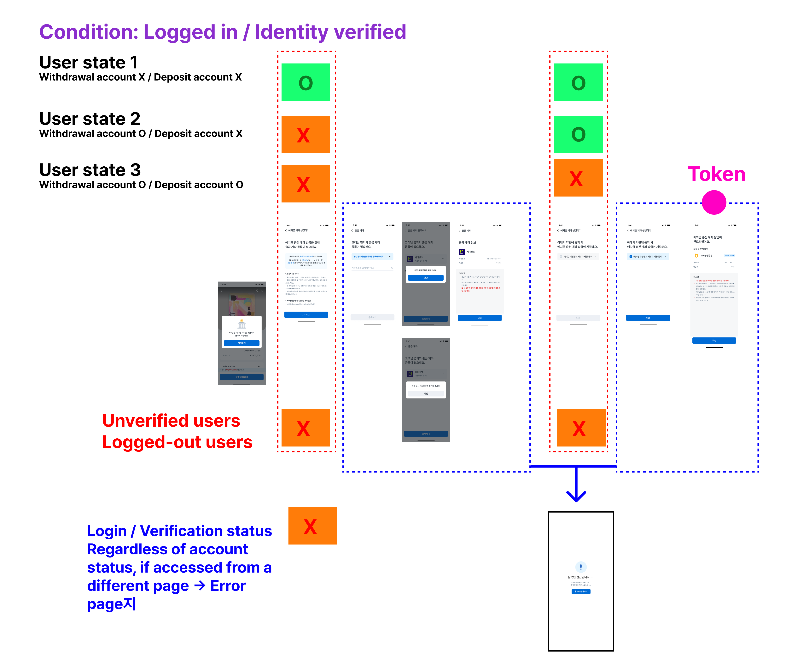
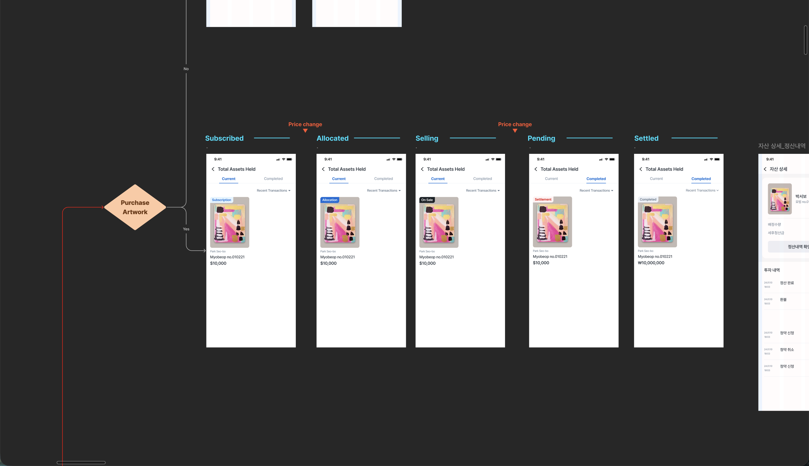

01 / OBSERVATION
Usability Issues
Observed sign-up and account setup difficulties.
Case Study
PROJECT OVERVIEW
As ARTiPIO's sole product designer, I led the initial app design and worked with product managers and engineers to bring it to launch. After launch, I continued improving core user flows through customer feedback and ongoing iterations.
01 / VOC-DRIVEN IMPROVEMENT
01 / OBSERVATION
Observed sign-up and account setup difficulties.
02 / FEEDBACK
Collected inquiries during investment offerings.
03 / ANALYSIS
Identified recurring usability issues.
Analyzed 100+ customer inquiries to identify recurring usability issues.
01 / DEPOSIT
19 deposit-related inquiries highlighted confusion in a required investment step.
7 inquiries highlighted friction around terms and conditions agreement.
The challenge wasn't just the interface.
It was helping users navigate complex financial and
participation requirements.
 1
2
1
2
01 / UNCLEAR DEPOSIT METHOD
Users were unsure how to transfer money to their virtual accounts using supported banking methods.
02 / TRANSFER RESTRICTIONS
Financial institution restrictions could cause transfers through certain third-party payment apps to fail, leaving users unsure how to complete their deposits.
User Quote
“How do I deposit investment funds?”
User Quote
“I'm trying to recharge by transferring funds from the Kakao app to the registered Nonghyup account, but the recharge keeps failing.”
01 / DEPOSIT REDESIGN

SOLUTION 01
Displayed the registered withdrawal bank's name to help users identify the correct app for transferring funds.
SOLUTION 02
Added step-by-step transfer instructions and emphasized the Copy button to guide users through the external banking process.
DESIGN IMPACT
80% ↓
Reduction in deposit-related inquiries

03 / EDGE CASE DESIGN
When purchase conditions overlap, I defined which warning to prioritize based on a fixed purchase limit and two changing values.
THREE VALUES · ONE PRIORITY DECISION
Fixed condition
Changing value
Changing value
$25,000
WARNING 01
The available deposit is lower than the purchase limit.
WARNING 02
The purchase limit is lower than the available deposit.
Simplifying the purchase journey meant reducing friction,
without losing the clarity users need to make informed decisions.
04 / INFORMATION ARCHITECTURE
Combined bank account registration and virtual account issuance into one continuous flow, eliminating unnecessary returns to the purchase page.
Keeping essential financial requirements intact while reducing unnecessary navigation.
01 / Identity Verification
02 / Home Address Entry
03 / Account Setup
Bank Account Registration + Virtual Account Issuance
04 / Investment Suitability Test
04 / DESIGN & DEVELOPMENT
Collaborated with a product manager and engineers to translate complex requirements into clear user flows, align on implementation, and validate the experience through QA.

Mapped screen transitions from investment offerings to account setup, clarifying the user journey for engineers.

Defined screen behavior based on login, identity verification, and account status to support implementation.

Translated investment requirements into visual UI flows showing how asset screens change from subscription to settlement.
Connecting the investment journey
HANDS-ON QA
30+